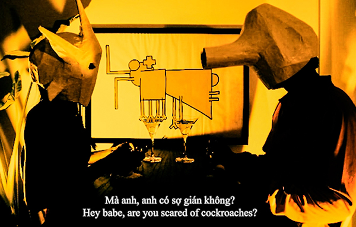

In-person events & online screenings
Dates: November 27th - December 1st 2022
Hosting venues:
⋆Sàn Art (Ho Chi Minh City)
⋆Khôngtrung drink & screen (Ho Chi Minh City)
⋆Á Space (Hanoi)
⋆Cù Rú Bar (Dalat)
⋆Old Soul Art Hub (Danang)
⋆CAB (Hoi An)
Supported by: Movies that Matter Impact Grant and Purin Pictures Film-related Activities Fund.
Awards:
To celebrate the 4th edition of Saigon Experimental Film and our new screening network expanding to other Vietnamese localities outside of Ho Chi Minh City and online, our jury will be attributing 3 awards to the selected films of 2022. These include our international (all films) and regional (films from Southeast Asia) film awards which will be attributed by jury vote. Our third prize - the audience award - will be decided thanks to YOUR vote.
Please go to ☆ our form ☆ and vote for your favourite film of Saigon Experimental Film Festival IV. Votes will close on the 30th of November 2022. Winners will be announced on our website later!
Programme (touch yellow to jump ⇅)
PART I.
1. Love Machine
2. A wind grazes your door
3. Heimat
4. Grimoire 9
5. Marija + Toma
6. Under the White Mask *(in-person event only)
7. Roach Dinner
8. Dots
9. Fantastic Fruits
10.Blooming
11.Behind those Walls
PART II.
12. CREATOR
13. I'LL BE BACK!
14. Noon in the cemetery
15. Keratin
16. Passage
17. Aralkum*(in-person event only)
18. Boom, Boom, Bass
19. Love, Dad*(in-person event only)
20. Transparent, the world is.
21. The Stream XII
22. Sisyphus' Cat
Information (in order of screening)
1. Love Machine (2021, Montenegro) - 7:23
Director: Milo Masoničić
Mostly made from appropriated images, Love Machine is a fictional story about a Love Casino. In this place, customers can put some money inside the love machines which in return will provide them with an exceptional love experience. With the constant rise and development of new technologies, eventually influencing our body image and sense of beauty, there is a growing need for people to communicate and exchange emotions with the machines they are using. Artificial intelligence also shows that it wants to communicate and establish relationships with us. This is a movie about falling in love with a machine, the possibilities of intimacy between human and machine, the eroticism of moving images, and the idea of simulated love.
-
Milo Masoničić was born in 1994 in Podgorica, Montenegro. He completed his Bachelor's Degree and specialisation studies at the Faculty of Dramatic Arts in Cetinje, Montenegro. Prior to Love Machine, Milo Masoničić published two novels and made two experimental short movies, Grandparents (2019) and Something is coming (2021).
2. A wind grazes your door (2021, Spain) - 7:30
Directors: Jorge Castrillo y Pablo Paloma
Production: Elias Querejeta Zine Eskola. My Deer Films. Montage: Gerard Borràs. Sound design: Laura Moreno. Sound archive: Antonio Quintana.
An exploration through celluloid images of liturgical singing, local folklore and flamenco traditions in an Andalusian village, in the South of Spain. Here, tradition mixes with the songs and voices of the past and present, which begin to rise from the earth like dusty reminders, of a violence and melancholy perhaps forgotten.
-
Jorge Castrillo is an Andalusian filmmaker whose work often explores identity issues related to territory. As a cinematographer, he is known for his preference of analogue formats. After graduating in photography direction by the E.S.C.A.C, he obtained a Master's Degree in Creation at the Elias Querejeta Zine Eskola. He works as a filmmaker, cinematographer and a producer. Pablo Paloma graduated from Escac, specialising in Cinematography, before undertaking a Master's Degree in Creation at the Elias Querejeta Zine Eskola. He now teaches at UPF, Barcelona, and Cinema en Curs. He has collaborated in films screened at different international festivals: Berlinale, Venice Film Festival, San Sebastian Film Festival, Visions du Reél, Docslisboa, etc. He is also a member of Cinema Semente, a film collective which operates from utopia in rural Galicia, Spain.
3. Heimat (2017, Germany) - 11:00
Director: Alisa Berger
A short film made from a longer movie titled Three Borders. The episode Heimat is based on stories of migration and homeland recounted by Berger's father. Inspired by works such as Chris Marker’s La Jetée (1962) and storytelling techniques borrowed from Magic Realism, Alisa Berger's film consists of family photos - some personal and others anonymous and found - blended with family anecdotes from her Jewish father and her North Korean mother. The film hereby addresses the overcoming of inner, outer, national, ethnic, spiritual or emotional borders which span three generations of her family.
-
Alisa Berger was born in 1987 in Makhachkala, Republic of Dagestan, and raised in Lviv, Ukraine. She studied film and fine arts at the Academy of Media Art Cologne, Germany and at the Universidad Nacional of Colombia. With her diploma film and fiction feature debut The Astronauts' Bodies, she was nominated for the Max Ophüls Prize and for the FIRST STEPS Award of the Deutsche Filmakademie. Alisa Berger creates films and installations, often in a collaborative process, that are accompanied, created, changed or destroyed within performative interventions. She is co-founder of the international film production company FORTIS FEM FILM which dedicates its work to increasing the visibility of women and their stories in film.
4. Grimoire 9 (The elegance of a Colombian necktie) (2020, Colombia) - 3:05
Director: Javier Fabregas
A virtual visit to the museum from the comfort of your home. A constraint in time. A low-res feast of tuberculosis. The book of Solomon opens right in front of your eyes. A sneeze. A sour travel through history. Basically, most of the sequences from Grimoire 9 were born in the middle of the uncertainty of the 2019 pandemic. Taking the form of an old, defective video game set in a bizarre museum, Grimoire 9 is an allegory for recent world events.
-
Javier Fabregas is a visual artist currently working with animation, independent publishing and video. His work is influenced by dark science-fiction, 80’s horror films, underground cinema, disjointed narratives, black metal, and 60's camp aesthetics amongst others. His main interest is to produce incisive comments about marginal cultures, ancient disruptions in our globalised modern world, and the confluences between epic fantasies and suburban monotony.
5. Marija + Toma (2021, Serbia) - 9:09
Directors: Eluned Zoe Aiano, Greta Rauleac, Alesandra Tatic
Sound design: Bojan Palikuća. Colour correction: Samuli Salonen.
Serbian pensioners Marija and Toma found each other in their 60s but are as smitten as teenagers, so much so that they invented a 15-month anniversary to be able to celebrate their love with their friends. The party takes place on the monument that Toma built to commemorate a great personal loss, drawing on the funds he acquired through years of working abroad. On this special day, the happy couple talks us through the lives and loves that led them here. The film is part of a series exploring aesthetics, architecture and identity among Gastarbeiters (migrant workers) throughout the Balkans.
-
Eluned Zoe Aiano is a filmmaker, editor and translator with a background in Visual Anthropology whose work is generally centred on Central and Eastern Europe. She is currently working on her first feature documentary in Serbia. She also writes about film and is a regular contributor to the East European Film Bulletin. Greta Rauleac (Wild Pear Arts) is a Romanian multimedia producer specialised in Visual Anthropology. She has worked with various documentary production companies in Italy (such as GA&A Productions and DocLab in Rome) and is also a researcher interested in resistance practices, popular culture and urban issues. Alesandra Tatić (Wild Pear Arts) is a visual anthropologist based between France and Spain. Her ethnographic fieldwork is global, yet mostly focused on the Balkans and the Mediterranean. Alesandra works with and for the women’s labor movement, exploring feminist resilience and migration phenomena.
6. Under the White Mask: the film that Haesaerts could have made (2020, Belgium) - 9:00
Director: Matthias De Groof
Production: Cobra Films. Distribution: Kino Rebelde.
*This film will only be on view at in-person events.
Under the White Mask: the film that Haesaerts could have made uses fragments of Under the Black Mask, a 1958 film about Congolese art directed by the Belgian artist Paul Haesaerts and qualified as colonial propaganda. This new film imagines what the masks, now subjects and not objects, would say. Aimé Césaire's 'Discourse on Colonialism' is spoken in Lingala for the first time. This speech is still a critical mirror for Europe.
-
Matthias De Groof is a Belgian filmmaker and scholar. His award-winning films have been presented at venues like the IFFR, Cannes Pan-African Film Festival, Le FIFA and the Berlinale. A published author (Lumumba in the Arts), he also works as a visiting scholar for the Tisch School of the Arts in New York, the Collegium for Advanced Studies in Helsinki, the Africa Multiple Cluster of Excellence at Bayreuth University, and at Waseda University in Tokyo.
7. Roach Dinner (2021, Vietnam) - 4:00
Director: Nguyễn Vũ Trụ

During the Covid-19 pandemic and Ho Chi Minh City lockdown of 2021, the artist spent the majority of his time stuck in his room. With no one to observe on the street and no one to talk to at home, the occasional visits of flying roaches would spark internal turmoil. This was a time where he yearned for love, a human muse. But all he had were roaches. They infested his room and also his mind. They became his new muses. The characters in the movies, are they even humans anymore? And facing possible extinction, do humans evolve to roaches? All of this is reimagined as a dinner conversation between a young Vietnamese couple where cockroaches become quite literally their existentialist food-for-thought.
-
Nguyễn Vũ Trụ is THE SON OF NEW SÀI GÒN. Born on the day of the dragon, month of the dragon and year of the dragon at the dawn of the 21st century. He is a painter, sculptor, video and performance artist whose practices ask the questions of a traveller, traversing in the 3 realms of materiality, subconscious and the internet. Nguyễn Vũ Trụ has a background in graphic design, and he holds a Bachelor's Degree in Contemporary Creative Practices from Staffordshire University, in the UK. He is also a skateboard photographer & art director.
8. Dots (2021, Germany) - 04:30
Director: Ann Oren
An unexpected ASMR respiratory exam. ASMR is a popular youtube genre, led by soothing and sounds believed by its creators to generate deep relaxation. It is a sound porn of sorts. DOTS is a part of Ann Oren’s video journals, a short video series responding to media culture often starring animals.
-
Ann Oren is an artist and a filmmaker. Her films and video installations feature characters existing in the liminal space between performers and audience. By dissolving distinctions between plant, animal and human, she asks what it is to be human in an ecosystem immersed in digital culture. Questions about intimacy, identity, and the lack thereof keep emerging through various audio-visual approaches. Her work has been presented at the Moscow Biennial for Young Art, the Hammer Museum, the Tel-Aviv Museum, the Anthology Film Archives, Apexart, Künstlerhaus Bethanien and KINDL in Berlin. Her films have been awarded at Oberhausen Short Film Festival, Slamdance and Locarno Film Festival amongst others.
9. Fantastic Fruits (2022, Singapore) - 7:18
Director: Khairullah Rahim
Fantastic Fruits (Buah Dahsyat) is an experimental short film capturing the veiled and coded lives of residents in Boon Lay, Singapore, through enigmatic fruits acting as multifarious symbols for intersecting themes including everyday rituals, desire, social mobility and labour. Anchored by the voice of drag queen Luna Thicc, the fruits’ behaviour and habits become enmeshed with found footage, smartphone videos and kitsch popular culture imagery.
-
Born in Singapore in 1987, Khairullah Rahim works across installation, object-making, painting and the moving image. Informed by his upbringing in an ethnic minority, working-class family, his work looks into strategies of resourcefulness in environments under surveillance. Through various means of collaboration and critical thinking, his practice considers mindful ways of shedding light onto the veiled lived experiences of his community. Themes and topics which are of interest to him include, everyday survival, desire, shame, labour and ambition.
10. Blooming (2019, China) - 13:00
Director: Lingyun Zheng
Production: Mickey Liu Xuan Zheng. Cast: Lang Zhang. Cinematography: Xuan Zheng; Lingyun Zheng. Music: Leo Zapplin. Technical Consultant: Renato Tonelli.
Blooming is a film about love and sickness. A painter draws spring flowers but the pinkness surrounding him causes his allergic reactions. Incorporating cut-outs, animation, and vintage hues of expired film rolls, Blooming showcases an artist whose creative world is consumed by his obsession for pink blooming flowers while in turn they begin to consume him from the inside.
-
Lingyun Zheng is a filmmaker. She makes experimental and documentary films. Her works include Blooming (2019), Ill-fitting Coat (2016) and A Tomato Is Not A Tomato (2015).
11. Behind those Walls (2022, Vietnam) - 11:48
Director: Trần Phước Hải Quỳnh
Taking place during the COVID-19 pandemic, two girls put in question their daily life and the odd things they saw behind the wall where they live, where they cannot reach. Those girls crave for knowing what is behind that wall, and they cannot live peacefully until they discern what is bothering their life. Somewhat akin in spirit to Věra Chytilová's Daisies but revisited in a world of green-screen videos and love for the nonsensical.
-
Born in 2003, Trần Phước Hải Quỳnh is a student studying liberal arts at Fulbright University in Ho Chi Minh City, Vietnam. Since childhood, she has been discovering herself through various forms of art, such as painting, music, and theatre. Growing up between Hanoian culture and French language, she is now strongly influenced by both Southeast Asian and French cultures. Her art explores the relationship between objects and their spaces, with a focus on surreal worlds. There, she can instinctively express the themes that she connects with most, including traumas of childhood, the witnessing of globalisation, and her observations of Vietnamese women - including herself - in society.
12. CREATOR (2021, Japan) - 6:00
Director: Riki Sato
A highly stylised and non-narrative animation made from paper cut-outs. For CREATOR, the artist took pictures of each movement, printed them out on paper, cut each out individually with scissors, and then filmed them one frame at a time. Preferring black and white to create a minimalistic atmosphere where the focus would be on the "star" medium itself - paper - allowing all its visual and textural possibilities to be explored in a work that is neither live-action nor puppetry, nor flat animation, but a combination of all.
-
Riki Sato was in Japan in 1996. Originally a university drop-out, he moved towards film and animation in 2021. Since then he has released three films: THE BACKSIDE OF A FORK (2021), CREATOR (2021), and The Sun is Setting in One's Memory (2022). So far, his films have been screened in Australia, Japan, Taiwan, and Mexico.
13. I'LL BE BACK! (2022, UK) - 10:54
Director: Hope Strickland
I’ll Be Back! begins and ends with the story of the rebel slave Francois Mackandal. In 1758, Mackandal was condemned to be burned at the stake, not only for his crimes but for his radical powers of metamorphosis. Filmed in archives and museums across the UK, I’ll Be Back! explores a series of collections holding objects of colonial violence. Amongst these is a book containing a diagram of a slave ship, a key document in the abolitionist movement widely published for its shocking nature, and a collection of insects gathered in Sierra Leone by a colonial topographer mapping borders and defining British and French territory in West Africa. Shifting across digital, 16mm and archival formats, the film interrogates institutional collecting practices and reconsiders the distances between myth, history and machinations of power.
-
Hope Strickland is a researcher and artist filmmaker from Manchester, UK. Her current work is concerned with postcolonial ecologies and the bonds between resource extraction and racial violence; as well as the temporal fractures and intimacies that can be found in working across archival, digital and 16mm film practices. Hope's work has screened internationally at film festivals including the '59th New York Film Festival,' the '60th Ann Arbor Film Festival' and the '66th BFI London Film Festival'.
14. Noon in the cemetery (2020, Switzerland) - 08:02
Director: Benjamin Poumey

When lunchtime comes, the Cimetière des Rois (“Cemetery of Kings”), in downtown Geneva, fills up with residents, workers, employees, and students of the neighbourhood. People come alone, in pairs, with friends or colleagues, to have a snack on the grass or to take a break on a bench. The living and the dead share a same space. The film makes them share a same time. Mixing contemporary Super 8 footage of the cemetery and sound archives of diverse personalities that were buried there, Noon in the Cemetery is both a film-essay and a kind of experimental documentary. If it was a painting, it could be a Vanitas, "a symbolic work of art showing the transience of life, the futility of pleasure, and the certainty of death”.
-
Benjamin Poumey studied filmmaking and theatre at University of Bordeaux III, while working with various theatrical companies. In 2001 he started working for Quo Vadis Cinema in Paris, focusing on film production. In 2006, after moving to Geneva, he began working with C-Side Productions (then known as Perceuse Productions Image), a company created by alternative and emerging artists in the 1990s. With an inclination for Direct Cinema, essay forms and bold experiments, he develops and produces documentaries selected (and sometimes even awarded) at festivals worldwide, like the São Paulo Mostra, the Berlinale, CPH:DOX, Sheffield Doc Fest, Locarno, or FIDBA amongst other.
15. Keratin (2021, United Kingdom) - 3:45
Directors: Charles Jimenez, Scarlett Wang, Catarina Dias Silva, Stella Rovenkvist, Isobel O'Gorman.
After a mating of elements, two bodies grieve over a lost third: a child separated from their womb. The three bodies regain connection in a wombic journey, bound by their keratin. This spiritually networks the three into an eternal fusion of a collective body. The film was inspired by the hormonal process of keratin as an analogy for the story of spiritual connections within a family.
-
Charles Jimenez (They/Them) is a neurodivergent filmmaker, artist, and performer whose work revolves around the invisible worlds of memory, dreamscapes and spiritual experiences through pictorial, surrealist, and metaphysical settings. Charles is in their second year of study at Central Saint Martins, London (UK).
16. Passage (2020, Germany) - 12:48
Director: Ann Oren
A foley artist creates sounds for a film starring a dressage horse and dissolves into their own imitation. As the character in the film, played by the gender-fluid performer Simon(e) Jaikiriuma Paetau, seems to transform into a gender-defying centaur, the film reflects on the boundaries between the human and the animal as well as on fictional gender roles and their transcendence. Shot on 16mm film, Passage also alludes to Eadweard Muybridge’s pre-cinematic experiments with horses.
-
Ann Oren is an artist and a filmmaker. Her films and video installations feature characters existing in the liminal space between performers and audience. By dissolving distinctions between plant, animal and human, she asks what it is to be human in an ecosystem immersed in digital culture. Questions about intimacy, identity, and the lack thereof keep emerging through various audio-visual approaches. Her work has been presented at the Moscow Biennial for Young Art, the Hammer Museum, the Tel-Aviv Museum, the Anthology Film Archives, Apexart, Künstlerhaus Bethanien and KINDL in Berlin. Her films have been awarded at Oberhausen Short Film Festival, Slamdance and Locarno Film Festival amongst others.
17. Aralkum (2022, Uzbekistan & Germany) - 13:40
Director: Mila Zhluktenko and Daniel Asadi Faezi
This film will only be on view at in-person events.
Aralkum, situated in Central Asia, is the world's youngest desert. Yet prior to the 1960s, the land homed one of the largest bodies of water found inland. After years of human-tempering on its rivers and natural irrigation system during the Soviet era, its water has almost entirely dried up, a fate shared by its fishing and tourist industries long gone. What is left is a desert landscape, as if from another planet. A few lonely, rusty shipwrecks. Low desert scrub grows around them to hold the sand together during the merciless storms. By weaving together different cinematic textures, the short film Aralkum re-imagines the dried-up Aral Sea, allowing an old fisherman to set sail one last time.
-
Born in Kyiv, Ukraine, in 1991, Mila Zhluktenko studied in the Documentary Department at University of Television and Film, Munich. Her films have been screened at numerous film festivals including IDFA, Visions du Réel, Camerimage and MoMA, winning multiple awards. Daniel Asadi Faezi was born in Germany in 1993. He studied in the Documentary Department at University of Television and Film in Munich, Germany, and National College of Arts in Lahore, Pakistan. In addition to directing films, he is also a producer of documentary and experimental cinema. His films have been screened at numerous film festivals including Locarno, DOK Leipzig, Visions du Réel and Ann Arbor. He is a Berlinale Talents alumni.
18. Boom, Boom, Bass (2021, US) - 03:28
Director: Brian M. Dinkel
Music by Sir EU + Tooth Choir
A music video created in collaboration with Sir EU and Tooth Choir, described by as a "frantic melt dream of glitch and simian" and an "audtiory visual experience to break your soul into technicolor dust". Much like Disavow (2020) and Breathe Deeper (2020), his latest video is another trippy combination of glitches, video game and pop culture references, ode to faulty VHS tapes, cult of the URL, all juxtaposed to the constantly innovative music of the rap duo.
-
Brian M. Dinkel is a cinematographer and visual-effects artist based out of Bowie, Maryland, in the US. He is a graduate of The Art Institute of Washington where he studied Digital Film Making & Video Production. He has worked as cinematographer on many projects including various short films and documentaries. In the winter of 2015, he travelled to Roatan, Honduras, photographing BRIGADE, a feature documentary about the Honduras Emergency Life Project. His goal as a cinematographer is to visually illustrate the stories of his and others in a way that leaves a lasting emotional impression on his audience.
19. Love, Dad (2021, Czech Republic-Slovakia) - 12:42
Director: Diana Cam Van Nguyen
Animation: Diana Cam Van Nguyen, Barbora Halířová, David Štumpf, Vojtěch Domlátil. Script: Diana Cam Van Nguyen, Lukáš Janičík. Camera / DOP: Kryštof Melka, Matěj Piňos. Casting: Linh Duong, Hong Nhung The Thi, Hoai Trung Le.
Image: Diana Cam Van Nguyen, Darjan Hardi. Special effects: David Štumpf. Film editor: Lukáš Janičík. Sound: Viera Marinová. Distributor: Miyu Distribution.
This film will only be on view at in-person events.
A short film about the ties and gaps between a child and a parent. The author rediscovers love letters that her dad used to write her from prison. That love seems to be gone now. She decides to write back in hope to find the connection again. She puts in writing what could not be said: blaming him for the family's break-up but also trying to understand.
-
Diana Cam Van Nguyen is a Czech-Vietnamese director based in Prague, Czech Republic. She graduated from FAMU International film school in Prague. Her works often focus on personal topics through the means of animated documentary. Her short films have been selected at festivals such as the Locarno IFF, Toronto, Rotterdam or IDFA. Apart (2018) was a finalist in BAFTA Student Film Award 2019. Her latest short Love, Dad (2021) won BFI Short Film Award, the Clermont-Ferrand Connexion Award and got a TIFF Special mention.
20. Transparent, the world is. (2019, Japan) - 7:00:
Director: Yuri Muraoka
Reminiscent of the retro-pop and non-narrative film aesthetics of the 1960s and 1970's, Transparent, the world is. is a portrait of the artist and her daughters metaphorically depicting the relationship between an individual's personality vs collective voice within the society. This is the story about the intense dichotomies that clash between our inner world and exterior context. In this film, each colour has a meaning. The definition of “red” extends to “life” and appears as a powerless and religious Daruma doll that loses its arms and legs. “White” and “black” rise above a simple dichotomy mingling into the concept of “grey” while the world, made of a mix of colours, becomes “transparent”.
-
Yuri Muraoka was born in Tokyo in 1981. She graduated from the Image Forum Institute of Moving Image in 2003. She creates moving images and photographic works of "self-portraiture", including Schizophrenia (2016), Transparent, the world is. (2019) and IDEA (2019). Her latest film Transparent, I am. (2020) won the Grand Prix at the 67th International Short Film Festival of Oberhausen in Germany (2021). Since 2018, she has also been working as a poet.
21. The Stream XII (2022, Japan) - 3:57
Director: Hiroya Sakurai
In the artificial environment of the paddy field, water - an element of nature - follows the rules of the artificial. As a result, nature is made abstract, giving rise to a new form of beauty distinct from the natural state. For the twelfth film in the series “The Stream”, Hiroya Sakurai did not limit the stream to liquids, but extended it to include the air. Here, the “stream” expresses a symbiotic cooperation between humans and nature.
-
Hiroya Sakurai was born in Yokohama, Japan, in 1958. He is a Professor at the Seian University of Art and Design in Japan. His work can be found in the collections of the National Gallery of Canada and J.Paul Getty Trust. His work was awarded at the '35th Asolo Art Film Festival', Italy (2016), the '39th Tokyo Video Festival', Japan (2017), '8th FILE 2017 - São Paulo', Brazil (2017), and the '56th Ann Arbor Film Festival', US (2018). Other important showcases include the '4th Sydney Biennale', Australia (1982), the '62nd Melbourne International Film Festival', Australia (2013), the '58th San Francisco International Film Festival', US (2015), and the '24th Rhode Island International Film Festival', US (2020).
22. Sisyphus’ Cat (2022, Vietnam) - 08:22
Director: Lý Trang
Playing with the idea of chasing immortality and escaping death, Sisyphus' Cat was created in the memory of Lý Trang's departed cat. In the film, she “cheats” death by transferring her soul to the future, where people live inside the body of nonstop-working servers and no one can die. Once she succeeded, her mission had become her own forced manual labour, and anything else done for the purpose of earning a living was to become an endless task in this immortal world.
-
Lý Trang is a Vietnamese musician and sound artist, currently based in Moscow, Russia. She has composed music and soundtracks since 2017 before delving into a sound art practice in 2020. Her work, full of sound explorations, singularity, rich in textures and progress, opens a door to the illusion of imaginary visualisation. Her interest lies in the individualisation of human and posthumanist thinking. After her first film, she has taken one step closer to answer the biggest questions that she has been keen on exploring in her work: Does extending life and defeating death have the equivalent meaning, and is it possible that death is a necessity for flourishing human identities?
About Saigon Experimental Film Festival:
Saigon Experimental Film Festival is a Ho Chi Minh City-based initiative launched in 2019 that encourages outsider visions and the unexpected.
Each year, we curate a 1-2 day event bringing together a selection of short films - all experimental whether in narration, editing, or visual content - carefully chosen from an international pool of online submissions. Aside from promoting a diversity of voices, aesthetics, career stage and localities, SEFF hopes to create a platform dedicated to imaginative and non-traditional video works in a country where these have limited visibility and creative expression must abide by governmental standards. Our shared love for this medium paired with a clear need for such events is what launched this initiative.
About Movies that Matter:
Movies that Matter wants to open eyes for human rights. Our core tasks are the screening of human rights related films and the stimulation of screenings of human-rights films. We realise these core tasks with our annual Movies that Matter festival, our educational work, the organisation of events, with advice inland and abroad and the support of festivals worldwide.
About Purin Pictures:
Purin Pictures is a film fund that supports independent cinema in Southeast Asia. Started in 2017 under the Purin Foundation, they look for artists and organisations that are doing unique and essential work in a region that lacks adequate governmental support. Managed by Anocha Suwichakornpong and Aditya Assarat, their funding programmes cover film production, film post-production, and film-related activities.